Book Title | Author & Illustrator | Book Cover | Description |
Up in the Garden and Down in the Dirt | Kate Messner, Christopher Silas Neal |
| Explore the secret realm beneath the dirt that brings the world of nature to life: Follow a young girl and her grandmother on a journey through the year planning, planting, and harvesting their garden—and learn about what's happening in the dirt to help make it all happen.
Up in the garden, the world is full of green—leaves and sprouts, growing vegetables, ripening fruit. But down in the dirt exists a busy world—earthworms dig, snakes hunt, skunks burrow—populated by all the creatures that make a garden their home. |
Over and Under the Snow | Kate Messner, Christopher Silas Neal | 
| Over the snow, the world is hushed and white. But under the snow exists a secret kingdom of squirrels and snow hares, bears and bullfrogs, and many other animals that live through the winter safe and warm, awake and busy, under the snow. Discover the wonder and activity that lies beneath winter's snowy landscape in this magical book. |
Over and Under the Waves | Kate Messner, Christopher Silas Neal | 
| Over the waves, the sea lions bark and seagulls wheel and call. The bay is smooth and bright in the sun. But under the waves, there's a whole hidden forest, full of whales and wolf eels, sardines and sea bass, leopard sharks and luminous jellies, as well as the waving kelp that shelters them all. Discover the magical depths of the kelp forest, and all the fascinating creatures living just a paddle's length away—over and under the waves. |
Over and Under the Rainforest | Kate Messner, Christopher Silas Neal | 
| Award-winning duo Kate Messner and Christopher Silas Neal take readers on a thrilling tour of one of the most diverse ecosystems on planet earth: the rainforests of Central America.
Discover the wonder that lies hidden among the roots, above the winding rivers, and under the emerald leaves of the rainforest. |
Over and Under the Pond | Kate Messner, Christopher Silas Neal | 
| In this gorgeous companion to the acclaimed Over and Under the Snow and Up in the Garden and Down in the Dirt, Kate Messner and Christopher Silas Neal bring to life a secret underwater world. In this book, readers will discover the plants and animals that make up the rich, interconnected ecosystem of a mountain pond. Over the pond, the water is a mirror, reflecting the sky. But under the pond is a hidden world of minnows darting, beavers diving, tadpoles growing. These and many other secrets are waiting to be discovered...over and under the pond. |
Over and Under the Canyon | Kate Messner, Christopher Silas Neal |
| Over and Under the Canyon takes young readers on a thrilling tour of a desert canyon ecosystem. Over the canyon, the sun scalds the air, baking desert mud to stone. But under the shade of the cliffs hides another world, where bighorn sheep bound from rock to rock on the hillside, roadrunners make their nests in sturdy cacti, and banded geckos tuck themselves into the shelter of the sand. Discover the wonders concealed in the curves of the canyon, the magic of a desert wildflower bloom, and all the unexpected creatures that bring the desert to life. |
A Seed is Sleepy | Dianna Aston, Sylvia Long | 
| Part of the incredible six-book Nature Books series from artist Sylvia Long and author Dianna Hutts Aston, A Seed is Sleepy introduces children to a fascinating array of seed and plant facts.
Turn each page to explore the amazing world of these garden wonders through watercolor illustrations that bring to life nature landscapes filled with seeds, flowers, plants, leaves, and trees. |
A Butterfly is Patient | Dianna Hutts Aston, Sylvia Long |
| Part of the incredible six-book Nature Books series from the award-winning duo of Dianna Hutts Aston and Sylvia Long, A Butterfly Is Patient celebrates a dazzling variety of butterflies in all their beauty and wonder.
Turn each page to explore the amazing world of these beautiful winged insects through watercolor illustrations that bring to life garden landscapes filled with flowers, vines, leaves, and sunshine. |
A Nest is Noisy | Dianna Hutts Aston, Sylvia Long | 
| "Fans will rejoice at the first sight of A Nest Is Noisy," promises School Library Journal, and they're right. From the award-winning creators of An Egg Is Quiet, A Seed Is Sleepy, A Butterfly Is Patient, A Rock Is Lively, and A Beetle Is Shy comes this gorgeous and informative look at the fascinating world of nests, from those of tiny bee hummingbirds to those of orangutans high in the rainforest canopy. Poetic in voice and elegant in design, this carefully researched book introduces children to a captivating array of nest facts and will spark the imaginations of children whether in a classroom reading circle or on a parent's lap. |
An Egg is Quiet | Dianna Hutts Aston, Sylvia Long | 
| This stunningly beautiful and wonderfully informative book from award-winning artist Sylvia Long and author Dianna Hutts Aston makes for a fascinating introduction to the vast and amazing world of eggs. Featuring poetic text and an elegant design, this acclaimed book teaches children countless interesting facts about eggs. Full of wit and charm, An Egg Is Quiet will at once spark the imagination and cultivate a love of science. |
A Rock is Lively | Dianna Hutts Aston, Sylvia Long |
| From the creators of the award-winning An Egg Is Quiet, A Seed Is Sleepy, A Butterfly Is Patient, and A Nest Is Noisy comes this gorgeous and informative introduction to the fascinating world of rocks. From dazzling blue Lapis Lazuli to volcanic Snowflake Obsidian, an incredible variety of rocks are showcased in all their splendor. Poetic in voice and elegant in design, this book introduces an array of facts, making it equally perfect for classroom sharing and family reading. |
A Beetle is Shy | Dianna Hutts Aston, Sylvia Long | 
| From the acclaimed duo Dianna Hutts Aston and Sylvia Long, creators of An Egg Is Quiet, A Seed Is Sleepy, and A Rock Is Lively, this beautiful paperback edition of A Beetle Is Shy is here to open a world of wonders to a new audience of young readers. From flea beetles to bombardier beetles, an incredible variety of these beloved bugs are showcased here in all their splendor. |
A Shell is Cozy | Dianna Hutts Aston, Sylvia Long | 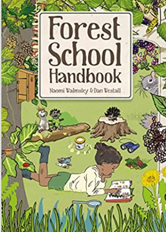 | The newest entry in the bestselling Nature Books series by Dianna Hutts Aston and Sylvia Long, A Shell Is Cozy takes a gorgeous look at the fascinating world of shells. From land snails to sea scallops, giant clams to tiny dwarf shells, an incredible array of shells are showcased in all their splendor. |
Worm Weather | Jean Taft, Matt Hunt | 
| Join in the rainy-day fun, as kids splash through the puddles, affecting another weather enthusiast, a nearby worm. An imaginative and playful story, readers will love seeing the worm delight in the weather just as much as the kids. |
Goodbye Winter, Hello Spring | Kenard Pak |
| As days stretch longer, animals creep out from their warm dens, and green begins to grow again, everyone knows―spring is on its way!
Join a boy and his dog as they explore nature and take a stroll through the countryside, greeting all the signs of the coming season. In a series of conversations with everything from the melting brook to chirping birds, they say goodbye to winter and welcome the lushness of spring. |
Goodbye Summer, Hello Autumn | Kenard Pak | 
| As trees sway in the cool breeze, blue jays head south, and leaves change their colors, everyone knows--autumn is on its way! Join a young girl as she takes a walk through forest and town, greeting all the signs of the coming season. In a series of conversations with every flower and creature and gust of wind, she says good-bye to summer and welcomes autumn. |
Goodbye Autumn, Hello Winter | Kenard Pak | 
| As leaves fall from their trees, animals huddle against the cold, and frost creeps across windows, everyone knows―winter is on its way!
Join a brother and sister as they explore nature and take a stroll through their twinkling town, greeting all the signs of the coming season. In a series of conversations with everything from the setting sun to curious deer, they say goodbye to autumn and welcome the glorious first snow of winter in Kenar Pak's Goodbye Autumn, Hello Winter. |
The Honeybee | Kirsten Hall, Isabelle Arsenault | 
| Buzz from flower to flower with a sweet honeybee in this timely, clever, and breathtakingly gorgeous picture book from critically acclaimed author Kirsten Hall and award-winning illustrator Isabelle Arsenault. |
The Wonder of Thunder | Sharon Purtill, Tamara Piper | 
| Do you know a child who is scared or feels uneasy during thunderstorms? The Wonder of Thunder is a lighthearted children’s rhyming picture book that helps tame fears while highlighting all the wondrous things thunderstorms can do. Children will adore Sally Storm, a lovable character who excitedly shares all the good she can do as she swirls and tumbles overhead. This early learning picture book introduces the topic of storms, thunder, lightning and rain in a fun and non-threatening way. |
The Hidden Rainbow | Christie Matheson |
| One little bee peeks out on a world of gray and snow.
She’s looking for bright colors and needs you to help them grow. Bees need a healthy and colorful garden to survive. Luckily, all the colors of the rainbow are hidden in this garden—but the bees need the reader’s help to find them. Brush off the camellia tree, tickle the tulips, and even blow a kiss to the lilac tree. With every action and turn of the page, a flower blooms and more bees are drawn to the feast.
|
Some Bugs | Angela DiTerlizzi, Brendan Wenzel | 
| Grab your magnifying glass! Find your field guide! And come hop, hide, swim, and glide through this buggy backyard world!
Featuring insects including butterflies and moths, crickets and cicadas, bumblebees and beetles, this zippy rhyming exploration of backyard-bug behavior is sure to have insect enthusiasts of all ages bugging out with excitement! |
Outside In | Deborah Underwood, Cindy Derby | 
| Outside is waiting, the most patient playmate of all. The most generous friend. The most miraculous inventor. This thought-provoking picture book poetically underscores our powerful and enduring connection with nature, not so easily obscured by lives spent indoors. Rhythmic, powerful language shows us how our world is made and the many ways Outside comes in to help and heal us, and reminds us that we are all part of a much greater universe. Emotive illustrations evoke the beauty, simplicity, and wonder that await us all . . . outside. |
Finding Wild | Megan Wagner Lloyd, Abigail Halpin |
| There are so many places that wild can exist, if only you know where to look! Can you find it? Two kids set off on an adventure away from their urban home and discover all the beauty of the natural world. From the bark on the trees to the sudden storm that moves across the sky to fire and flowers, and snowflakes and fresh fruit. As the children make their way through the woods and back to the paved and noisy streets, they discover that wild exists not just off in some distant place, but right in their own backyard. |
The Hike | Alison Farrell | 
| Three intrepid young female explorers set out to conquer the outdoors in their local forest, enjoying the process in their own different ways. Wren brings a sketchbook and a flag, El brings a poetry notebook, and Hattie brings feathers (and holds Bean the dog’s leash). They get lost and use maps to find their way. They draw wildlife, spot deer tracks, and see a deer before it startles and disappears, all before they finally and joyfully reach their destination. |
Wonder Walkers | Micha Archer | 
*Cover may vary | When two curious kids embark on a "wonder walk," they let their imaginations soar as they look at the world in a whole new light. They have thought-provoking questions for everything they see: Is the sun the world's light bulb? Is dirt the world's skin? Are rivers the earth's veins? Is the wind the world breathing? I wonder . . . Young readers will wonder too, as they ponder these gorgeous pages and make all kinds of new connections. What a wonderful world indeed! |
A Walk in the Forest | Maria Dek | 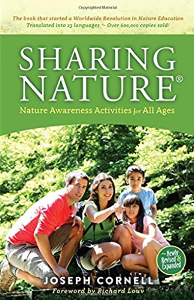 | A charming, illustrated picture book that invites young readers to discover the woods as a place for both imaginative play and contemplation.
The forest comes alive in all its mysterious glory with Maria Dek's charming watercolor images and poetic text in A Walk in the Forest. With the turn of each serenely illustrated page, young readers will follow along to collect pinecones, feathers, or stones; follow the tracks of a deer; or listen to the chirping of birds and the whisper of trees. Build a shelter and play hide-and-seek. Pretend the woods are a jungle or shout out loud to stir up the birds. |
We Are Water Protectors | Carole Lindstrom, Michaela Goade | 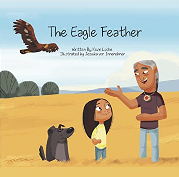 | Water is the first medicine. It affects and connects us all . . .
When a black snake threatens to destroy the Earth And poison her people’s water, one young water protector Takes a stand to defend Earth’s most sacred resource. |
Stand Like A Cedar | Nicola I. Campbell, Carrielynn Victor |
| When you go for a walk in nature, who do you see? What do you hear? Award-winning storyteller Nicola I. Campbell shows what it means to "stand like a cedar" on this beautiful journey of discovery through the wilderness. Learn the names of animals in the Nłeʔkepmxcín or Halq'emeylem languages as well as the teachings they have for us. Experience a celebration of sustainability and connection to the land through lyrical storytelling and Carrielynn Victor's breathtaking art in this children's illustrated book. Discover new sights and sounds with every read. A glossary and pronunciation guide can be found at the back of the book. |
Be A Good Ancestor | Leona Prince, Gabrielle Prince, Carla Joseph |
| Rooted in Indigenous teachings, this stunning picture book encourages readers of all ages to consider the ways in which they live in connection to the world around them and to think deeply about their behaviors. Addressing environmental issues, animal welfare, self-esteem and self-respect, and the importance of community, the authors deliver a poignant and universal message in an accessible way: Be a good ancestor to the world around you. Thought-provoking stanzas offer a call to action for each one of us to consider how we affect future generations. Every decision we make ripples out, and we can affect the world around us by thinking deeply about those decisions. |
Walking Together | Elder Dr. Albert D. Marshall, Lousie Zimanyi, Emily Kewageshig |
| This innovative picture book introduces readers to the concept of Etuaptmumk—or Two-Eyed Seeing, the gift of multiple perspectives in the Mi’kmaw language—as we follow a group of young children connecting to nature as their teacher. A poetic, joyful celebration of the Lands and Waters as spring unfolds: we watch for Robin's return, listen for Frog's croaking, and wonder at maple tree's gift of sap. Grounded in Etuaptmumk, also known as Two-Eyed Seeing—which braids together the strengths of Indigenous and non-Indigenous ways of knowing—and the Mi’kmaq concept of Netukulimk—meaning to protect Mother Earth for the ancestors, present, and future generations—Walking Together nurtures respectful, reciprocal, responsible relationships with the Land and Water, plant-life, animals and other-than-human beings for the benefit of all. |
Ten Ways to Hear Snow | Cathy Camper, Kenard Pak | 
| One winter morning, Lina wakes up to silence. It's the sound of snow -- the kind that looks soft and glows bright in the winter sun. But as she walks to her grandmother's house to help make the family recipe for warak enab, she continues to listen.
As Lina walks past snowmen and across icy sidewalks, she discovers ten ways to pay attention to what might have otherwise gone unnoticed. With stunning illustrations by Kenard Pak and thoughtful representation of a modern Arab American family from Cathy Camper, Ten Ways to Hear Snow is a layered exploration of mindfulness, empathy, and what we realize when the world gets quiet. |
Berry Song | Michaela Goade | 
| On an island at the edge of a wide, wild sea, a girl and her grandmother gather gifts from the earth. Salmon from the stream, herring eggs from the ocean, and in the forest, a world of berries. Salmonberry, Cloudberry, Blueberry, Nagoonberry. Huckleberry, Snowberry, Strawberry, Crowberry. Through the seasons, they sing to the land as the land sings to them. Brimming with joy and gratitude, in every step of their journey, they forge a deeper kinship with both the earth and the generations that came before, joining in the song that connects us all. Michaela Goade's luminous rendering of water and forest, berries and jams glows with her love of the land and offers an invitation to readers to deepen their own relationship with the earth. |
Winter Sleep: A Hibernation Story | Sean Taylor, Alex Morss, Cinyee Chiu |
| In this cozy bedtime story, follow a child and his grandma through a winter landscape to explore how the Earth goes to sleep for winter.
Spot the sleeping animals as the tale unfolds, then learn about their hibernation habits from the information pages at the end. |
Carson Crosses Canada | Linda Bailey, Kass Reich | 
| Feisty Annie Magruder and her dog, Carson, live in British Columbia, Canada, and they're setting out to visit her sister, Elsie, in Newfoundland. In their little rattlebang car, packed with Carson's favorite toy, Squeaky Chicken, and plenty of baloney sandwiches, Annie and Carson hit the road! They travel province by province, taking in each unique landscape and experiencing something special to that particular part of this vast, grand country. For example, they marvel at the beauty of the big, open sky -- and grasshoppers! -- in Saskatchewan and discover the gorgeous red earth and delicious lobster rolls in PEI, before finally being greeted by Elsie -- and a surprise for Carson! |
The Snowy Day | Ezra Jack Keats | 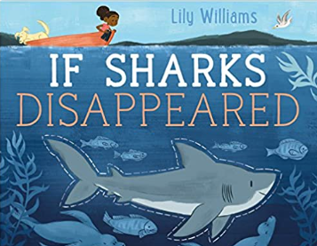 | The Snowy Day, a 1963 Caldecott Medal winner, is the simple tale of a boy waking up to discover that snow has fallen during the night. Keats's illustrations, using cut-outs, watercolors, and collage, are strikingly beautiful in their understated color and composition. |
Wiggling Worms at Work | Wendy Pfeffer, Steve Jenkins |
| Crawling through the dirt, worms are hard at work. Worms help the fruit and vegetables we eat by loosening the soil and feeding the plants. Read and find out about these wiggling wonders! This clear and appealing science book for early elementary age kids, both at home and in the classroom, lets readers know about all the important ways worms work to help the environment—and people. It contains a find out-more-section with fun activities.
|
A Log’s Life | Wendy Pfeffer, Robin Brickman |
| One stormy day a strong wind rages through the forest, causing an old oak tree to bend and sway. Lightning strikes; the tree crashes to the ground. Now it’s a giant log.
In this fascinating book, author Wendy Pfeffer and illustrator Robin Brickman introduce readers to they life cycle of a tree. The informative, lyrical text is complemented by stunning, three-dimensional paper sculptures that showcase the forest ecosystem, inspiring readers to take a close look at the trees—and logs—in their own backyards. |
The Longest Day | Wendy Pfeffer, Linda Bleck |
| In this fourth and final book in the series about seasons, Wendy Pfeffer turns her attention to summer, when butterflies emerge from silky cocoons and daylight hours stretch longer and longer. With lyrical prose and vibrant illustrations, The Longest Day takes us on a journey through the history and science behind the summer solstice, with a focus on summer celebrations from various cultures around the world. Teachers and students alike will treasure the varied and accessible knowledge, and activities in the back let everyone in on the festivities. |
The Shortest Day | Wendy Pfeffer, Jesse Reisch | 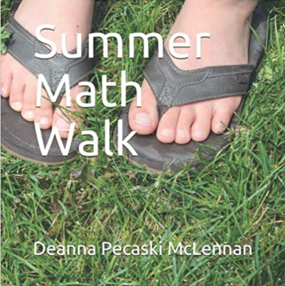 | The beginning of winter is marked by the solstice, the shortest day of the year. Long ago, people grew afraid when each day had fewer hours of sunshine than the day before. Over time, they realized that one day each year the sun started moving toward them again. In lyrical prose and cozy illustrations, this book explains what the winter solstice is and how it has been observed by various cultures throughout history. Many contemporary holiday traditions were borrowed from ancient solstice celebrations. Simple science activities, ideas for celebrating the day in school and at home, and a further-reading list are included. |
Sweetgrass | Theresa Meuse, Jessica Jerome |
| A modern story of traditional Indigenous knowledge that follows a young boy and his Auntie as they gather and braid sweetgrass, one of the four sacred medicines. It's early July, and for Matthew and his Auntie that means one thing: time to go sweetgrass picking. This year, Matthew's younger cousin Warren is coming along, and it will be his first time visiting the shoreline where the sweetgrass grows. With Auntie's traditional Mi'kmaw knowledge and Matthew's gentle guidance, Warren learns about the many uses for sweetgrass—as traditional medicine, a sacred offering, a smudging ingredient—and the importance of not picking more than he needs. Once the trio is back at Auntie's house, she shows the boys how to clean and braid the grass. From the duo behind the bestsellers The Gathering and The Sharing Circle, this heartfelt story about the gifts we receive from Mother Earth and how to gather them respectfully offers thoughtful insight into a treasured Mi'kmaw tradition. |
The Eagle Feather | Kevin Locke, Allison Parker, Jessika Von Innerebner |
| When we look up to the sky and see a beautiful eagle soaring by, we may stop to appreciate its graceful sight, but, as Kevin Locke explains, eagles also have powerful teachings to offer. In this book Kevin shares with us that each feather on the eagle's wing represents a virtue that we can all learn from. Suggested for Ages 4-6 |
Turtle Island: The Story of North America’s First People | Eldon Yellowhorn,, Kathy Lowinger | 
| Unlike most books that chronicle the history of Native peoples beginning with the arrival of Europeans in 1492, this book goes back to the Ice Age to give young readers a glimpse of what life was like pre-contact. The title, Turtle Island, refers to a Native story that explains how North and Central America were formed on the back of a turtle. Based on archeological finds and scientific research, we now have a clearer picture of how the Indigenous people lived. Using that knowledge, the authors take the reader back as far as 14,000 years ago to imagine moments in time. A wide variety of topics are featured, from the animals that came and disappeared over time, to what people ate, how they expressed themselves through art, and how they adapted to their surroundings. The importance of story-telling among the Native peoples is always present to shed light on how they explained their world. The end of the book takes us to modern times when the story of the Native peoples is both tragic and hopeful. |
Slow Down: 50 Mindful Moments in Nature | Rachel Williams, Freya Hartas | 
| Slow down to watch 50 nature stories that command calm and foster mindfulness
All around us, nature is working wonders. Every day, hour by hour, magical transformations happen right in front of you. But it’s not always easy to see them…In this beautiful illustrated collection, 50 moments in nature are paused for you to watch them in detail. Then you should go outside, and explore, and see what you find when you take the time to slow down. Gorgeously illustrated, this charming collection celebrates the small wonders happening all around us every day. |
Bear Island | Matthew Cordell | 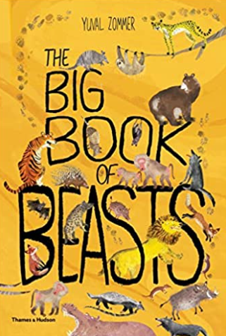 | Louise and her family are sad over the loss of their beloved dog, Charlie. "Life will not be the same," Louise says, as she visits a little island that Charlie loved.
But on a visit to the island after Charlie's death, something strange happens: She meets a bear. At first, she's afraid, but soon she realizes that the bear is sad, too. As Louise visits more often, she realizes that getting over loss takes time. And just when she starts to feel better, it's time for Bear to bed down for the winter.
Once again, Louise believes that life will not be the same. But sometimes, things can change for the better, and on the first warm day of spring, her family welcomes a new member. Here is a lovely, poignant story about loss and healing that will bring comfort to even the youngest readers. |
Watercress | Andrea Wang, Jason Chin | 
| While driving through Ohio in an old Pontiac, a young girl's Chinese immigrant parents spot watercress growing wild in a ditch by the side of the road. They stop the car, grabbing rusty scissors and an old paper bag, and the whole family wades into the mud to gather as much as they can.
At first, she's embarrassed. Why can't her family just get food from the grocery store, like everyone else? But when her mother shares a bittersweet story of her family history in China, the girl learns to appreciate the fresh food they foraged—and the memories left behind in pursuit of a new life.
Together, they make a new memory of watercress. |
The Snail with the Right Heart: A True Story | Maria Popova, Ping Zhu |
| This boldly illustrated book about evolution for children features a large gatefold that opens up to immerse readers in the story and will help kids understand that nature is all about differentiation and that being different is beautiful. |
Sidewalk Flowers | JoArno Lawson, Sydney Smith |
| In this wordless picture book, a little girl collects wildflowers while her distracted father pays her little attention. Each flower becomes a gift, and whether the gift is noticed or ignored, both giver and recipient are transformed by their encounter. |
Town is by the Sea | Joanne Schwartz, Sydney Smith | 
| A young boy wakes up to the sound of the sea, visits his grandfather’s grave after lunch and comes home to a simple family dinner with his family, but all the while his mind strays to his father digging for coal deep down under the sea. Stunning illustrations by Sydney Smith, the award-winning illustrator of Sidewalk Flowers, show the striking contrast between a sparkling seaside day and the darkness underground where the miners dig. |
Small Wonders: Jean-Henri Fabre and His World of Insects | Matthew Clark Smith, Giuliano Ferri | 
| A moth with a sixth sense. A wasp that hunts beetles nearly twice its size. The lives of fascinating creatures such as these were unknown until one man introduced them to the world. Meet Jean-Henri Fabre, one of the most important naturalists of all time. As a boy in the French countryside, Henri spent hours watching insects. He dreamed of observing them in a new way: in their own habitats. What he discovered in pursuing that dream was shocking; these small, seemingly insignificant creatures led secret lives—lives of great drama! |
Treasure | Mireille Messier, Irene Luxbacher | 
| When two siblings go on a treasure hunt, they aren't sure exactly what kind of treasure they are looking for. What they do know is that treasures are shiny, mysterious and precious. And that all the really good treasures are hidden! As they explore the forest, their curiosity pays off when they find the biggest, shiniest, most mysterious and precious treasure hidden just over a hill. Told exclusively in dialogue, this beautifully illustrated picture book exudes a sense of wonder at the natural world and emphasizes the magical qualities of looking through a child's eye. |
The Branch | Mireille Messier, Pierre Pratt | 
| When an ice storm snaps a small girl’s favorite branch from the tree in her yard, she won’t let it be hauled away. To her, it wasn’t just any branch, “It was my castle, my spy base, my ship . . .” Her neighbor Mr. Frank agrees. He says the branch has “potential,” and the two get to work transforming what was broken into something whole and new, to be enjoyed again and again. |
If Sharks Disappeared | Lily Williams | 
| A healthy ocean is home to many different kinds of animals. They can be big, like a whale, tiny, like a shrimp, and even scary, like a shark.
Even though sharks can be scary, we need them to keep the oceans healthy. Unfortunately, due to overfishing, many shark species are in danger of extinction, and that can cause big problems in the oceans and even on land.
What would happen if this continued and sharks disappeared completely?
Artist Lily Williams explores how the disappearance would affect other animals across the whole planet in this clever book about the importance of keeping sharks, and our oceans, healthy. |
If Bees Disappeared | Lily Williams | 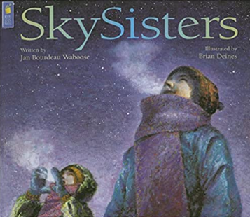 | Though bees are small, their importance is BIG. Today there are over 250,000 species of bees but all of them are in danger. Because of disease, pesticide exposure, lack of foraging habitats, and poor nutrition, entire honey bee hives are dying.
What would happen if bees disappeared completely?
Artist Lily Williams explores how such a loss would effect not just bees' environment, but the world as a whole in this poignant, beautiful book about the importance of our most important bees. |
Tiny, Perfect Things | M.H. Clark, Madeline Kloepper | 
| The whole world is a treasure waiting to be found. Open your eyes and see the wonderful things all around. This is the story of a child and a grandfather whose walk around the neighborhood leads to a day of shared wonder as they discover all sorts of tiny, perfect things together. With rhythmic storytelling and detailed and intricate illustrations, this is a book about how childlike curiosity can transform ordinary days into extraordinary adventures. |
Snow | Uri Shulevitz | 
| "It's snowing, said boy with dog. "It's only a snowflake," said grandfather with beard.
No one thinks one or two snowflakes will amount to anything. Not the man with the hat or the lady with the umbrella. Not even the television or the radio forecasters. But one boy and his dog have faith that the snow will amount to something spectacular, and when flakes start to swirl down on the city, they are also the only ones who know how to truly enjoy it. |
All the World | Liz Garton Scanlon, Marla Frazee | 
| All the world is here. It is there. It is everywhere. All the world is right where you are. Now.
Following a circle of family and friends through the course of a day from morning until night, this book affirms the importance of all things great and small in our world, from the tiniest shell on the beach, to the warmth of family connections, to the widest sunset sky. |
|
|
|
|
Inch by Inch | Leo Lionni | 
| In this clever classic about measurement, a little inchworm comes up with a surprising plan to avoid becoming breakfast for a bird. |
The Mitten | Jan Brett |
| When Nicki drops his white mitten in the snow, he goes on without realizing that it is missing.
One by one, woodland animals find it and crawl in; first, a curious mole, then a rabbit, a badger and others, each one larger than the last. Finally, a big brown bear is followed in by a tiny brown mouse and what happens next makes for a wonderfully funny climax. |
The Busy Little Squirrel | Nancy Tafuri |
| The leaves have started to fall. The air is cold. Squirrel needs to get ready for winter. He cannot nibble with the mice. He does not have time to hop with the frogs or run with the dogs. Will this busy little squirrel ever slow down? |
Edible Colors | Jennifer Vogel Bass |
| With a combination of unusual foods and a kaleidoscope of colors, this concept book shows that not all foods have to look the same way. A banana can be red, broccoli can be purple, and cherries can be yellow and still taste just as delicious. |
Kaqtukowa'tekete'w the Thundermaker | Alan Syliboy, Lindsay Marshall |
| Mi'kmaw artist Alan Syliboy's The Thundermaker is based on Alan's spectacular mixed-media exhibit of the same name. In the book, Big Thunder teaches his son, Little Thunder, about the important responsibility he has making thunder for his people. Little Thunder learns about his Mi'kmaw identity through his father's teachings and his mother's traditional stories. Syliboy's spectacular, vibrant artwork brings the story of Little Thunder to vivid life. |
Nibi’s Water Song | Sunshine Tenasco, Chief Lady Bird | 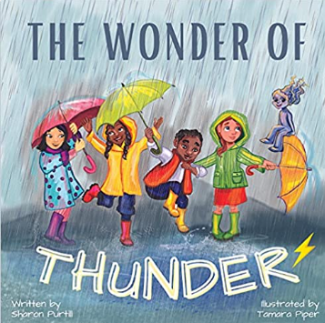 | Nibi is the Anishinaabemowin word for water. In Nibi's Water Song , an Indigenous girl on the search for clean water to drink. Though she is faced with repeated obstacles, Nibi's joyful and determined energy becomes a catalyst for change and action as her community, and then in widening circles the country and government, rally around her to make clean drinking water available for all. In a story perfectly levelled for young readers, there is a strong underlying message that even when a problem seems too large to face, every bit that everyone does helps. And inaction in the face of a wrong is not an option. |
Wave | Suzy Lee | 
| In this evocative wordless book, internationally acclaimed artist Suzy Lee tells the story of a little girl's day at the beach. Stunning in their simplicity, Lee's illustrations, in just two shades of watercolor, create a vibrant story full of joy and laughter. |
Follow the Moon Home: A Tale of One Idea, Twenty Kids, and a Hundred Sea Turtles | Philippe Cousteau, Deborah Hopkinson, Meilo So | 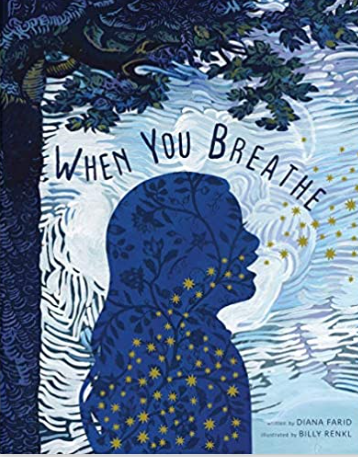 | A triumphant story of environmental activism, community, and friendship: Acclaimed activist Philippe Cousteau and renowned author Deborah Hopkinson team up to offer a story of the powerful difference young people can make in the world. Meet Viv, who has a new home and a new school by the sea and follow her as she finds her way in a new place and helps bring together a whole community to save the sea turtles of the South Carolina coast. |
Flashlight | Lizi Boyd | 
| In this charming story, told solely through images, artist Lizi Boyd offers an enchanting exploration of night, nature, and the nocturnal world. One boy's camping adventure gets even better when he shines a light into the shadows and finds all sorts of nighttime creatures, fascinating insects, plants, trees, and streams—all brilliantly illuminated in the beam of his flashlight. |
Fly | Mark Teague |
| It’s a big day up in the tree that Mama bird shares with her baby. Mama bird thinks Baby bird is finally ready to leave the nest and learn to fly so he can migrate south with the rest of their flock. But Baby bird isn’t so sure. Can’t his mother keep bringing him worms in their nest? Can’t he migrate in a hot air balloon instead? Or perhaps a car?
This silly wordless picture book will keep young readers giggling as Baby bird figures out that he must flap his wings and learn to fly—whether he likes it or not! |
Float | Daniel Miyares | 
| A little boy takes a boat made of newspaper out for a rainy-day adventure. The boy and his boat dance in the downpour and play in the puddles, but when the boy sends his boat floating down a gutter stream, it quickly gets away from him.
So of course the little boy goes on the hunt for his beloved boat—and when the rain lets up, he finds himself on a new adventure altogether.
This seemingly simply story from Daniel Miyares is enriched with incredible depth and texture that transcend words. |
Summer Feet | Sheree Fitch | 
| Canada's Dr. Seuss, Sheree Fitch, is back with a brand-new tongue-twisting picture book that celebrates all things summer. From those first barefoot days, wobble-dy walking over rocks and pebbles, to wandering-wild while searching for sea glass and, finally, huddled-up cozy at a late-summer bonfire, these summer feet flutter kick, somersault, hide-and-seek, and dance in the rain, soaking up all the season has to offer. |
At the Pond | Geraldo Valerio | 
| On a dull gray day, a boy puts his dog on a leash and they walk to a shimmering pond where snowy white swans swim freely. One of the swans invites the boy and dog for a ride. They climb on its back and sail into a stunningly beautiful landscape, dotted with wildflowers, spoonbills and ibises. Foxes, rabbits and deer appear in this paradise, then butterflies and even bigger, more beautiful flowers. The boy unleashes his dog on shore, and the dog bounds off to play. Now the boy wraps his arms around the swan’s neck — he has a new friend. But when he puts the leash on the swan, the sky turns stormy gray, the water becomes turbulent, and the other swans fly away. Both the boy and swan are miserable, until the boy realizes he must free his friend. When he drops the leash into the pond, warm color fills their world and they return to where the boy’s dog happily awaits him. |
At the Pond | Werner Zimmermann | 
| One fish, two fish, three fish, four . . . Spend a lazy summer day exploring a tiny, perfect slice of nature! Count goldfish as they swim about the tranquil pond. Watch as sunlight moves across the water. Spot a water lily blossoming, frogs and water striders hopping through, a heron flying by. With a simple text and rich, lifelike paintings, Werner Zimmermann has created a peaceful meditation on nature and a unique and beautiful world for readers of all ages to enjoy. Continue the learning journey at the end of the book, where you'll find more information on all the animals that call the pond home. |
The Sharing Circle | Theresa “Corky” Larson-Jonasson, Emma Bullen, Jessika Von Innerebner |
| When two red foxes have an argument which breaks apart their community, a gentle buffalo decides to take a braid of sweetgrass to a local elder and asks her to help with a sharing circle for all the animals. |
The Sharing Circle: Stories About First Nations Culture | Theresa Meuse, Arthur Stevens | 
| Sharing Circle includes seven children's stories about First Nations culture and spirituality practices. All seven stories, The Eagle Feather, The Dream Catcher, The Sacred Herbs, The Talking Circle, The Medicine Wheel, The Drum, and The Medicine Pouch explore First Nations cultural practices and teach children about Mi'kmaq beliefs and heritage. Researched and written by Mi'kmaw children's author Theresa Meuse and beautifully illustrated by Mi'kmaw illustrator Arthur Stevens, this book will engage and inform children of all ages. |
Shi-Shi-Etko | Nicola I. Campbell, Kim LaFave |
| In just four days young Shi-shi-etko will have to leave her family and all that she knows to attend residential school.
She spends her last days at home treasuring the beauty of her world -- the dancing sunlight, the tall grass, each shiny rock, the tadpoles in the creek, her grandfather's paddle song. Her mother, father and grandmother, each in turn, share valuable teachings that they want her to remember. And so Shi-shi-etko carefully gathers her memories for safekeeping. |
Wild Berries | Julie Flett, Earl N. Cook |
| Tch, tch, sh, sh, tup, tup. Spend the day picking wild blueberries with Clarence and his grandmother. Meet ant, spider, and fox in a beautiful woodland andscape, the ancestral home of author and illustrator Julie Flett. This book is written in both Enlglish and Cree, in particular the n-dialect, also known as Swampy Cree from the Cumberland House area. Wild Berries is also available in the n-dialect Cree, from the Cross Lake, Norway House area, published by Simply Read Books. |
We All Play | Julie Flett | 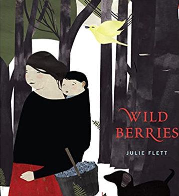 | Animals and kids love to play! This wonderful book celebrates playtime and the connection between children and the natural world. We play too! / kimêtawânaw mîna At the end of the book, animals and children gently fall asleep after a fun day of playing outside, making this book a great bedtime story. A beautiful ode to the animals and humans we share our world with, We All Play belongs on every bookshelf. This book also includes a glossary of Cree words for wild animals in the book, and a pronunciation guide and link to audio pronunciation recordings. |
SkySisters | Jan Bourdeau Waboose, Brian Deines |
| Two Ojibway sisters set off across the frozen north country to see the SkySpirits' midnight dance. It isn't easy for the younger sister to be silent, but gradually she begins to treasure the stillness and the wonderful experiences it brings. After an exhilarating walk and patient waiting, the girls are rewarded by the arrival of the SkySpirits -- the northern lights -- dancing and shimmering in the night sky. This powerful story, with its stunning illustrations, captures the chill of a northern night, the warmth of the family circle and the radiance of a child's wonder. |
Hey, Water! | Antoinette Portis | 
| Splash! A spunky little girl plays a spirited game of hide-and-seek with water, in this gorgeously illustrated nonfiction picture book. |
Now | Antoinette Portis |
| This is my favorite cloud. . .because it's the one I am watching. This is my favorite tree. . .because it's the one where I'm swinging. This is my favorite tooth. . .because it's the one that is missing.
Follow a little girl as she takes you on a tour through all of her favorite things, from the holes she digs to the hugs she gives in Now, a clever and poignant picture book by award-winning artist Antoinette Portis. |
A New Green Day | Antoinette Portis |
| If you listen, nature speaks. Explore nature through evocative riddles and bold imagery that take the reader from day to night and back again in this perfect read aloud. |
Daniel Finds a Poem | Micha Archer | 
| What is poetry? Is it glistening morning dew? Spider thinks so. Is it crisp leaves crunching? That’s what Squirrel says. Could it be a cool pond, sun-warmed sand, or moonlight on the grass? Maybe poetry is all of these things, as it is something special for everyone—you just have to take the time to really look and listen. The magical thing is that poetry is in everyone, and Daniel is on his way to discovering a poem of his own after spending time with his animal friends. What is poetry? If you look and listen, it’s all around you! |
My Ocean is Blue | Darren Lebeuf, Ashley Barron | 
| A young girl's poetic exploration of the enchanting ocean she loves.
“This is my ocean,” the young girl begins as she heads over the dunes with her mother. Then, as they pass the whole day at the seaside, she lyrically describes her ocean in simple, sensory detail. It's both “slimy” and “sandy,” “sparkly” and “dull.” It has wonderful sounds, as it “splashes and crashes and echoes and squawks.” And it contains so many colors, from “rusted orange” to “runaway red,” “faded white” to “polished green.” Though “mostly it's blue.” Nothing the girl experiences escapes her careful observation and appreciation. And at day's end, she can't wait for her next trip to the beach. |
My Forest is Green | Darren Lebeuf, Ashley Barron | 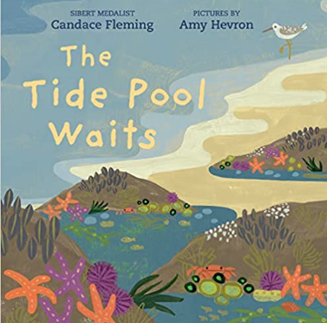 | With art supplies in tow, a young boy explores the urban forest near his home, then interprets what he sees with his art. The boy is a keen observer who uses poetic, rhythmic language to describe the diversity he finds through all four seasons. His forest is both “fluffy” and “prickly,” “dense” and “sparse,” “crispy” and “soft.” It's also “scattered and soggy, and spotted and foggy.” His forest is made up of many colors --- but he decides that “mostly it's green.” Each aspect of the forest inspires the boy to create a different kind of art: charcoal rubbing, rock art, photography, sponge painting, snow sculpture, cut-paper collage. To this artist, there's always something new to discover, and to capture! |
Sorting Through Spring | Lizann Flatt, Claudia Davila, Ashley Barron |
| As young readers journey into the natural world, they will discover that numbers, patterns, shapes — and much more! — can be found by observing everyday plants and animals. What if animals and plants knew math, just like us? Would flowers bloom in patterns? Would raindrops fall in rhythm? Would birds balance evenly on branches? In Sorting through Spring, the second title in the Math in Nature series, nature comes to life to help children in Grades K to 2 learn concepts of patterning, sorting, data management, and probability. |
Sizing Up Winter | Lizann Flatt, Ashley Barron | 
| As young readers journey into the natural world, they will discover that numbers, patterns, shapes — and much more! — can be found in everyday plants and animals.
What if animals and plants knew math, just like us? Would snowflakes all fall from the same height in the sky? Would otters spread themselves evenly across lakes? Would groundhogs be aware of the date? In Sizing Up Winter, the third title in the Math in Nature series, nature comes to life to help children grasp concepts of time and measurement. |
Shaping Up Summer | Lizann Flatt, Ashley Barron | 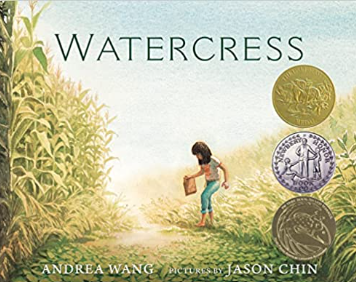 | As young readers journey into the natural world, they will discover that numbers, patterns, shapes — and much more! — can be found in everyday plants and animals. What if animals and plants knew math, just like us? Would spiders draw pictures in their webs? Would narwhals sort blocks of ice by shape? Would insects know what’s above and what’s below? In Shaping Up Summer, the final title in the Math in Nature series, nature comes to life to help children grasp concepts of geometry, symmetry, and spatial sense. This interactive, poetic, and artful picture book series is an enticing way to introduce math to kids — they will laugh, use their imaginations, and learn through activities inspired by the books. |
Counting on Fall | Lizann Flatt, Ashley Barron |
| As young readers journey into the natural world, they will discover that numbers, patterns, shapes — and much more! — can be found by observing everyday plants and animals. What if animals and plants knew math, just like you? Would leaves fall in patterns? Would whales enter a race? In Counting on Fall, the first title in the four-book Math in Nature series by award-winning author Lizann Flatt, nature comes to life to help children grasp concepts of number sense and numeration. The engaging “What if?” format of this informational picture book is sure to delight children in Grades K to 2. |
Pretty Tricky: The Sneaky Ways Plants Survive | Etta Kaner, Ashley Barron | 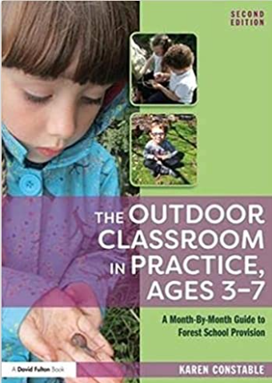 | Have you ever thought of plants as tricky? Probably not. But in this nonfiction book, readers are introduced to the tricky techniques some plants use to defend themselves, reproduce, or acquire food. From the copycat Boquila vine that changes shape to match its host plant, to the pungent carrion flower that lures pollinating flies with the scent of rotten meat, plants across the globe have adapted to survive all kinds of threatening fauna. |
I Talk Like a River | Jordan Scott, Sydney Smith | 
| What if words got stuck in the back of your mouth whenever you tried to speak? After a day of being unable to speak when asked, and of being stared at, a boy and his father go to the river for some quiet time. It's just a bad speech day, says Dad. But the boy can't stop thinking about all the eyes watching his lips twisting and twirling. When his father points to the river bubbling, churning, whirling and crashing, the boy finds a way to think about how he speaks. Even the river stutters. Like him. I talk like a river, he says. An incredibly moving picture book that offers understanding rather than a solution, and which will resonate with all readers, young and old. |
My Footprints | Bao Phi, Basia Tran | 
| Every child feels different in some way, but Thuy feels "double different." She is Vietnamese American and she has two moms. Thuy walks home one winter afternoon, angry and lonely after a bully's taunts. Then a bird catches her attention and sets Thuy on an imaginary exploration. What if she could fly away like a bird? What if she could sprint like a deer, or roar like a bear? Mimicking the footprints of each creature in the snow, she makes her way home to the arms of her moms. Together, the three of them imagine beautiful and powerful creatures who always have courage - just like Thuy. |
I’m Trying to Love Spiders | Bethany Barton |
| I’m Trying to Love Spiders will help you see these amazing arachnids in a whole new light, from their awesomely excessive eight eyes, to the seventy-five pounds of bugs a spider can eat in a single year! And you’re sure to feel better knowing you have a better chance of being struck by lightning than being fatally bit by a spider. Comforting, right? No? Either way, there’s heaps more information in here to help you forget your fears . . . or at least laugh a lot! |
Give Bees a Chance | Bethany Barton |
| Not sure whether to high-five bees or run away from them? Well, maybe you shouldn't high-five them, but you definitely don't have to run away from them. Give Bees a Chance is for anyone who doesn't quite appreciate how extra special and important bees are to the world, and even to humankind! Besides making yummy honey, they help plants grow fruits and vegetables. And most bees wouldn't hurt a fly (unless it was in self-defense!).
Bethany Barton's interactive cartoon-style illustrations and hilarious narrator mean this book is full of facts and fun. With bees officially on the endangered animals list, it's more important now than ever to get on board with our flying, honey-making friends! |
Five Bizzy Honeybees: The Fun and Factual Life of the Honeybee | Lance Douglas | 
| Honey bees are among the most remarkable creatures on earth! They are regularly seen scouring the blossoms of flowers in the spring and summer months. And yet, ask most adults how honey bees produce honey and the answers will be as varied as the flowers. The fact is, each honey bee lives in a very structured and organized home, called a colony. There is nothing random about a beehive. Every bee has a specific assignment to further the work of the hive to produce the honey we all love. This story, with its award winning illustrations by internationally recognized Italian illustrator Yuribelle, takes the reader on a fascinating journey into the hive and explores the highly organized life of a honey bee. Readers from 1 to 100 will be amazed at the fun, and yet factual, illustrations. Additionally, each page provides simple yet entertaining and engaging insight into the life of the honey bee. Adult readers will find additional factual information on each page to provide further insight. |
The Magic & Mystery of Trees | Jen Green, Claire McElfatrick | 
| From the highest branch and leaf down to the complex “wood wide web” of roots, it’s no wonder every part of a tree plays an important role in its own growth and the habitat of the whole forest or woodland. The Magic & Mystery of Trees is a nature book that takes children on a fascinating journey of exploration, showing them just how special these mighty organisms are. |
The Book of Brilliant Bugs | Jess French, Claire McElfatrick | 
| Take a magical journey through the forest floor, down into the deepest caves and even across the open ocean. The Book of Brilliant Bugs, written by insect expert Jess French, takes children on an expedition into the bug kingdom. The insect book is filled with fascinating facts about these little animals, how bugs pass on messages, compete for food, seek true love and fill the air with buzzing wings. It also shows how bugs help look after our planet and how we can help them. |
Earth’s Incredible Oceans | Jess French, Claire McElfatrick |
| Let's go on an underwater adventure! From glowing jellyfish to deep-sea dwellers, children will discover the incredible secret world of life under the sea. This ocean book is filled with a combination of gorgeous photographs and colorful illustrations that will delight and inspire kids - teaching them the importance of the ocean and how to help take care of it themselves.
Little ones will be intrigued by sea life like sharks, narwhals, sea birds, ocean reptiles, and so much more. They will learn interesting facts, and explanations about how the ocean functions, like how underwater plants and species rely on each other, and how ocean animals have fun and look after their young. This beautiful book is the perfect gift for young animal and conservation enthusiasts. |
Humongous Fungus: The Weird and Wonderful Kingdom of Fungi | Wenjia Tang, Lynne Boddy | 
| From tiny microbes to the largest living thing, fungi are everywhere! Without fungi, our ecosystem would not work. It provides food for plants and animals and creates a place for them to live. But beware, some types of fungi can destroy crops through fungal diseases or even change animals’ behavior. This fascinating foraging book for kids is sure to keep little ones engaged and entertained!
Did you know that fungi are made to make medicine for humans? Or that the most mushrooms can be seen in autumn? This picture book about nature is packed with fun facts about fungi. It includes gross-out stories of fungal infections that kids will love, incredible facts about "bananageddon", crop disease, epidemics, and zombified ants! It’s the ultimate gift for children who are interested in nature and microorganisms. |
The Wonders of Nature | Ben Hoare |
| The world is filled with curious objects such as amazing rocks and minerals, microscopic life, plants, animals and more. The wonders of wildlife are so much bigger than young minds can fathom and there is always more to learn! The Wonders of Nature is a stunning nature encyclopedia for young readers to explore, with reference pages packed with fascinating information, little learners will be captivated as they dive into this collection of 100 remarkable items from the natural world, from orchids to opals and lichens to lizards and so much more! Each plant, animal, and rock is shown both photographically and illustrated, and children will love poring over the detailed close-up images. |
Tree Full of Wonder | Anna Smithers, Martyna Nejman | 
| Tree Full of Wonder is a vibrant, rhyming, educational and unique picture book showing the unbreakable bond between people and trees. For children ages 3-8. Kids will fall in love with nature and will become Protectors of the Trees. Mindful stories for kids create a brighter and calmer future, one child at a time. |
Life Cycles: Everything From Start to Finish | Sam Falconer | 
| Everything begins and everything ends — but what happens in between? Find out in this stunning nature book. Learn about human life and development, processes in nature, how animals change over time, how the universe was formed and so much more. |
Under Your Feet | Wenjia Tang | 
| Under Your Feet delves beneath the Earth's surface and explores the diverse wonders hidden there. Encounter creatures of the deep and marvel at the mind-boggling size of the humongous fungus - the biggest organism in the world. Learn how one handful of ordinary soil contains more organisms than there are people on Earth, and carry out experiments using dirt from your own back garden. |
Hello World! Garden Time | Jill McDonald |
| Hello, World! is a series designed to introduce first nonfiction concepts to babies and toddlers. Told in clear and easy terms ("Roots spread into the soil below, and then a shoot pushes up out of the earth") and featuring bright, cheerful illustrations, Hello, World! makes learning fun for young children. And each sturdy page offers helpful prompts for engaging with your child. It's a perfect way to bring science and nature into the busy world of a toddler, where learning never stops. |
What’s Inside a Flower?: And Other Questions About Science and Nature | Rachel Ignotofsky | 
| Budding backyard scientists can start exploring their world with this stunning introduction to these flowery show-stoppers--from seeds to roots to blooms. Learning how flowers grow gives kids beautiful building blocks of science and inquiry. |
What’s Inside a Caterpillar Cocoon?: And Other Questions About Moths and Butterflies | Rachel Ignotofsky | 
| Butterflies soar in the sunlight. While moths flutter under the moon and stars.
Find out more about these mysterious and majestic insects similarities and differences, and their awestrucking metamorphosis! |
My Friend Earth | Patricia MacLachlan, David Diaz, Francesca Sanna | 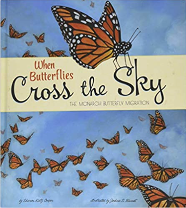 | Our friend Earth does so many wonderful things! She tends to animals large and small. She pours down summer rain and autumn leaves. She sprinkles whisper-white snow and protects the tiny seeds waiting for spring. |
I Hear You, Forest | Kallie George, Carmen Mok | 
| This playful yet calming book about wonderful forest sounds is the perfect gift for introducing kids to loving-and respecting-the natural world around them. The forest has lots to say if you listen. When a child steps into the forest, her ears are open and her heart is too. She listens carefully and hears marvelous things. She hears the rustling of leaves sharing their secrets. She hears a beetle balancing on a branch. And the more she listens, the more she learns. |
The Big Book of Bugs | Yuval Zommer |
| From moths and beetles to worms and spiders, the world is crawling with fascinating bugs. The Big Book of Bugs is the first fact-filled book for children to explore the vast array of creepy-crawlies that share our Earth.
In the first pages, children learn that bugs live nearly everywhere on the planet and gain tips on how to become a young bug spotter. As the book continues, the scenic compositions on each page are dedicated to key groups of bugs, including beetles, moths, butterflies, bees, snails, crickets, grasshoppers, worms, and spiders. Some spreads approach the world of bugs thematically, such as bugs that come out at night, baby bugs, and life cycles, how bugs hide and show off, and how some bugs love to live in your home. The conversational, funny text is also full of facts that will astonish children and adults, and accompanied by Yuval Zommer’s colorful illustrations. |
The Big Book of Beasts | Yuval Zommer, Barbara Taylor |
| A beautifully illustrated, informative book for children introducing them to a fascinating cast of beasts. In The Big Book of Beasts, Yuval Zommer’s wonderful illustrations bring to whimsical life some of the grizzliest, hairiest, bravest, wiliest, and most fearsome beasts in the animal kingdom. Brimming with interesting facts from beast consultant Barbara Taylor, this charming picture book is a beautiful way for parents to introduce young children to the animal world—and for older children to learn by themselves. In the first pages, children learn that beasts are wild animals that can’t be tamed and that they all defend themselves in different ways. As the book continues young readers meet specific beasts, including armadillos, bears, tigers, and the Tasmanian devil. The Big Book of Beasts also approaches the world of beasts thematically, looking at mythical beasts, Ice Age beasts, beasts on your street, and how to save beasts in danger of extinction. |
The Big Book of the Blue | Yuval Zommer | 
| Following The Big Book of Bugs and The Big Book of Beasts, the hugely successful series takes to the sea! Following the wild success of The Big Book of Bugs and The Big Book of Beasts, The Big Book of the Blue is the third installment in Yuval Zommer’s beloved series. Alongside everything the young oceanographer needs to know, Zommer’s charming illustrations bring to life some of the slipperiest, scaliest, strangest, and most monstrous underwater animals. The book opens by explaining how different types of animals are able to breathe and survive underwater, and the different families to which they belong. Subsequent pages are dedicated to specific creatures, including sea turtles, whales, sharks, stingrays, and seahorses, and show varied life in specific habitats, such as a coral reef or deep sea bed. The Big Book of the Blue also explores the underwater world thematically, looking at animals in danger, learning how to spot creatures at the beach, and discovering how to do our part to save sea life. Beautiful and filled with fascinating facts, young, curious readers won’t be able to tear their eyes away from the page. |
The Big Book of Birds | Yuval Zommer |
| Following up the hugely successful The Big Book of Bugs, The Big Book of Beasts, and The Big Book of the Blue, The Big Book of Birds is a fact-filled tour of the world’s most wonderful winged creatures. Yuval Zommer’s distinctive illustrations show off some of the most colorful, flamboyant, impressive, and wacky birds of the sky. Picture-book charm pairs with informative nonfiction to make a beautiful, large-format title for parents to share with young children and for older children to read by themselves. The book draws in children and parents alike with captivating information about and charming illustrations of hummingbirds, peacocks, flamingos, bald eagles, secretary birds, puffins, red-crowned cranes, and more. The book also invites young bird-watchers to protect birds where they live and make their gardens bird-friendly. The text is chatty, funny, and full of remarkable facts. |
The Big Book of Blooms | Yuval Zommer | 
| In The Big Book of Blooms, the next installment in the wildly successful The Big Book series, Yuval Zommer’s charming illustrations bring to life some of the most colorful, flamboyant, and unusual flowers from across the globe. In the opening pages, readers will learn all about botany, including how to recognize different types of flowers. Subsequent pages illustrate the various habitats that are home to flora such as pitcher plants, the giant water lily, and the weirdly wonderful corpse flower. Readers will discover which flowers are endangered and why some blooms are fragrant or colorful, not to mention grisly details about carnivorous and poisonous flowers. |
The Big Book of Belonging | Yuval Zommer |
| The Big Book of Belonging is a timely celebration of all the ways that humans are connected to life on planet Earth. With children at the heart of every beautifully illustrated spread, this book draws parallels between the way humans, plants, and animals live and behave. We all breathe the same air and take warmth from the same sun, we grow, we adapt to the seasons, and we live together in family groups. Readers will be fascinated to learn that instead of using words to communicate, fava beans send chemical messages through their roots, Caribbean reef squid send warnings of danger and even declarations of love by changing color, and that adorable big-eyed primates called tarsiers make calls to one another over the noise of the rainforest that are too high-pitched for predators to hear. By putting children at the heart of the book’s concept, author Yuval Zommer unites readers of the Big Book series from all corners of the world under one banner—of belonging to planet Earth. The book’s gentle message of caring for nature will inspire readers of all ages and encourage a new generation of environmentalists to flourish. |
The Big Book of Nature Art | Yuval Zommer |
| Featuring twenty-two easy craft projects using natural and recycled materials, The Big Book of Nature Art is a fun and eco-friendly way for young children to connect creatively with nature. From best-selling author Yuval Zommer, The Big Book of Nature Art is packed with easy art activities inspired by nature. Drawing on Zommer’s years of experience running art workshops for children, The Big Book of Nature Art includes his tips for stress-free ways to get creative with kids and fun facts about the natural world. Each of the activities can be achieved in four simple steps using natural materials combined with recycled or found materials from around the home. With a total of twenty-two art activities, each requiring no more than a five-minute setup and cleanup, the crafts are easy to complete and fun for everyone involved. The book also encourages children to see the creative potential in the natural and everyday treasures all around us—from twigs, seed pods, petals, and leaves to pencil shavings, take-out cups, toilet-paper rolls, and more. Little nature artists will enjoy making paper-plate birds, leaf bugs, coffee-cup owls, tree-bark bats, and schools of seashell fish, as well as scenes for their creatures to dwell in, from watery worlds to underground tunnels. |
When You Breath | Diana Farid, Billy Renkl | 
| What happens when you breathe? In this beautiful book, breath—the very air, stardust, the grand molecules of the universe—blossoms in the upside-down tree in your rising chest, animating and enlivening you. And when you breathe out, you send your song out into the world. |
|
|
|
|
|
|
|
|
|
|
|
|
|
|
|
|
|
|
|
|
|
|
|
|
|
|
|
|
|
|
|
|
|
|
|
|
|
|
|
|
|
|
|
|
|
|
|
|
|
|
|
|
|
|
|
|
|
|
|
|